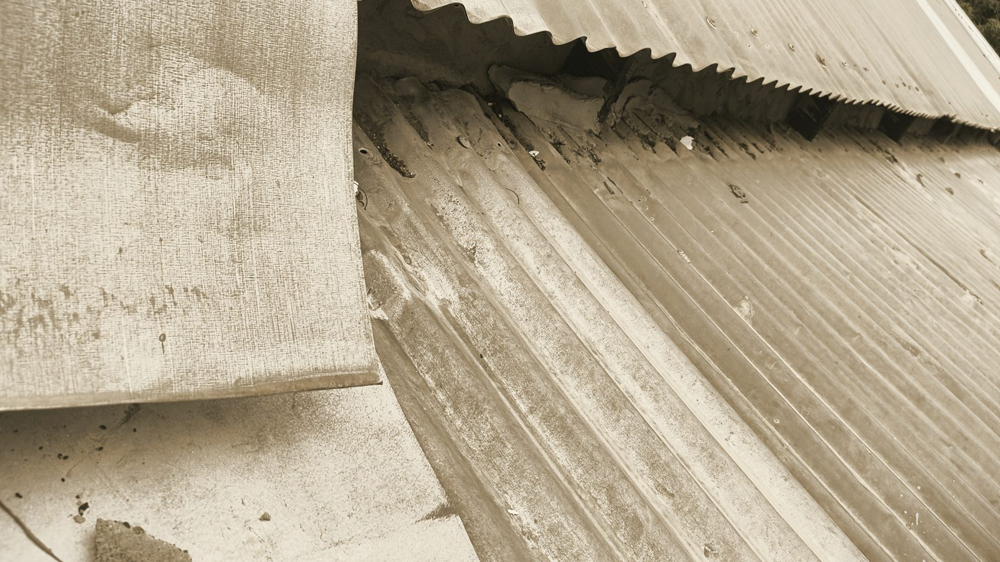

Thinking · Art and artists
An arts strategy
Art runs through the plan for the land: a studio in the house, an evening register built around artists and live music, films about the place, makers' hands in the building. But "art" can mean several quite different things here, and each pulls on money, time and my own capacity differently. These are the options as I see them.
Rob Berkeley · October 2026
Where art already sits in the plan
When the living and dining move to the garden side of the house, the old living room becomes a studio. Skylights give it the top light a studio needs, which was one more reason to keep them. A studio kit of trestles, a materials store, task lights and floor protection is budgeted at about £1,000, though nothing is quoted. The evening register we've described for the land is artists, women, dining, live music, the diaspora and culture, under fairy lights. And the public framing of the whole project is "a community of creatives, makers, thinkers and artists".
Option one: workshops and courses in the studio
Artists' workshops, midweek and out of season, with cookery classes using the same space later on.
For: in our business model, workshops are the single largest driver of income, and the only line that earns from the house itself rather than the grove. They fill the quiet weeks, and a pre-sold workshop place is working capital that also proves demand. Against: that income figure is an assumption, with nothing behind it yet. The studio is also one of the two rooms we'd let, with a fold-down bed, so a let week and a workshop week compete for the same room. And someone has to design, sell and host every course. Right now that someone is me.
Option two: residencies and residential courses
An organisation books the grove for a group to stay, make and learn, with the kitchen feeding them. The plan already includes pre-sold residential courses, where a deposit lands before the build is finished.
For: a whole-grove booking fills every bed at once, and courses bring in the chefs and facilitators we'd otherwise have to find. Against: the bodies most likely to book are ones I already know through my professional life, which raises fair questions about conflicts of interest. A residency in the open sense, an artist given time and space to make work, isn't in our record at all. It's an idea, not a plan, and it costs beds that could earn.
Option three: supper clubs and live music
Visiting chefs, film nights, music under the mango trees, a monthly midweek gathering for the UK diaspora.
For: it's the register the neighbourhood lacks. The nearby late venues are a nightclub and a sports bar. Food and music bring local people, not only visitors. Against: it needs a liquor licence, a projector and screen that are still only a stretch goal, and evenings that don't disturb guests sleeping a few metres away. Musicians need paying, and nobody has yet asked what local people would pay for a seat.
Option four: commission the makers
Put artists and craftspeople into the fabric of the place. The house kitchen is planned to be built by a local cabinetmaker in mango timber from trees felled for light. Earlier designs for buildings on the land had carved fretwork screens, jig-cut by Grenadian makers, as their most striking feature, and as the local jobs case too.
For: the money stays on the island, the place looks like nowhere else, and the work outlasts us. Against: it's slower and dearer than buying from a factory. Those fretwork designs belonged to cabins we've since parked, and the current guest suites are flat-pack modules. Some of the decorative options in front of us now are themselves imported: one route for the bathroom partitions is laser-cut aluminium with a custom pattern, from a factory in Foshan. The line between a local craft and an imported aesthetic can be thin.
Option five: the films as the art
The film series about the land is already the most finished creative work in the project: episodes about the house, the history and the village, and short explainers set to the Tivoli Drummers. A guest chef could film a menu with us, on our channel and theirs.
For: it costs little beyond my time, it reaches people far from Simon, and it records something that matters to the family. Against: it's mostly my voice, and my view of the place. It can turn neighbours into material. And time spent editing is time not spent on the build or the kitchen.
Option six: partner, don't duplicate
Seamoon Cultural Centre, just along the road, is planned to have a theatre, a drama room, a music lab, a dance room and visual arts space. It was meant to open in May 2026; it is late, but it is being built and should be complete for 2027, which is when we open too. The Tivoli Drummers are a short drive north, and the Soca Monarch semi-finals come to Seamoon Pavilion every year.
For: they have the rooms, the reach and the local standing, and we could send guests their way at almost no cost. Against: we don't know whether the Centre is finished or has a programme yet. Partnerships take time to earn, and we'd have little to offer until we're open.
Where things stand
Planned: the studio and its kit, workshops as an income line, the supper clubs, local timber for the kitchen, and the films, which are being released now. Further out: arts and craft workshops as a later phase, alongside a farm school and catering. Not in the record at all: residencies, or selling and showing artists' work on site. What would decide it: whether workshops actually sell, how the studio and the lets share one room, what the Cultural Centre turns out to be, and how much of this I can carry myself before it needs someone else to run it.